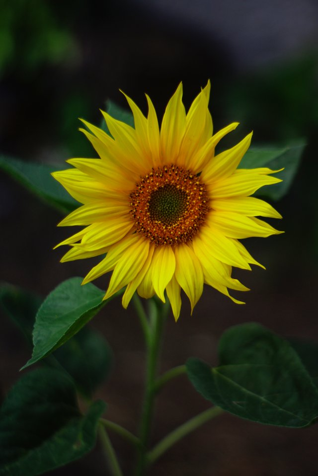

Sun Flower
Helianthus, commonly known as "sunflowers", are a genus of perennial flowering plants in the daisy family Asteraceae. They are cultivated in temperate regions, and some tropical regions as crops. They will typically grow during the summer and into early fall, with the peak season being mid-summer.
Distribution
Sunflowers originate in the Americas. They were first domesticated in what is now Mexico, and the Southern United States. Domestic sunflower seeds have been found in Mexico, as far back as 2100BCE. In the 16th century, the first crop breeds were brought from America to Europe by explorers. The growth of a sunflower depends strictly on its genetic makeup and background. Also, the season it is planted in will effect its development, optimally, Summer, or Fall.
Growth
Sunflowers are usually tall annual, or perennial plants that can grow to 120 inches or taller. They bear one or more wide, terminal capitula(flower heads), with bright yellow ray florets at the outside and yellow, or maroon disk florets inside. During growth, sunflowers tilt during the day to face the sun, but stop once they begin blooming. This tracking of the sun in young sunflower heads is called helioptroism. By the time they are mature, sunflowers will generally face east. The movement through heliotropism happens as the sunflower follows the sun, the opposite side of the sunflower stem begins to accumulate growth hormones and this causes growth which redirects the sunflower.
Production
In Brazil, a unique system of production called the soybean-sunflower system is used: sunflowers are planted first, and then the soybean crops follow, reducing idle periods and increasing total sunflower production, and profitability. Sunflowers are usually planted in the exetreme southern or northern regions of the country. Frequently, in the southern regions, sunflowers are grown in the beginning of rainy seasons, and soybeans can be planted in the summer. This method has been shown to have positive environmental impacts.
